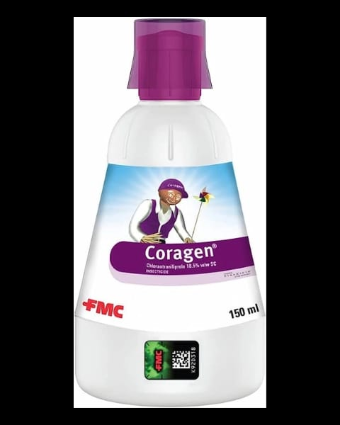

औषधाविषयी :
Coragen® हे कीटकनाशक एक अँथ्रॅनिलिक डायमाइड ब्रॉड स्पेक्ट्रम कीटकनाशक आहे
ते विशेषतः लेपिडोप्टेरन कीटकांसाठी सक्रिय आहे, प्रामुख्याने लार्व्हिसाइड म्हणून
या कीटकनाशकाने एक अद्वितीय क्रिया जणून घेतली आहे जी इतर कीटकनाशकांना प्रतिरोधक कीटक नियंत्रित करते. Coragen® हे लक्ष्य नसलेल्या आर्थ्रोपॉड्ससाठी निवडक आणि सुरक्षित आहे, आणि नैसर्गिक परजीवी, शिकारी आणि परागकणांचे संरक्षण करते.
प्रमाण:
५ ml प्रती पंप
एकरी 35ml
टीप:
Coragen® चा उपयोग केवळ शेतीसाठी करण्यात यावा आणि केवळ निर्दिष्ट मात्रेत करणे आवश्यक आहे.
- मास्क चा वापर अनिवार्य केला पाहिजे.
- वापराची मात्रा, समय, आणि विधानांचे पालन करणे महत्वाचे आहे, त्यामुळे निर्दिष्टित अनुसार वापर करा.
तांत्रिक सामग्री :
क्लोराँट्रानिलिप्रोल 18.5% w/w हे केमिकल वापरले आहे.
वापर :
Coragen® चा उपयोग किंवा वापर कीटकनाशक म्हणून केला जातो.
क्रियेची पद्धत:
Coragen® कीटकनाशक अँथ्रॅनिलिक डायमाइड ब्रॉड स्पेक्ट्रम कीटकनाशक आहे, ज्यामध्ये लेपिडोप्टेरन कीटकांसाठी सक्रिय घटक आहे. ते लार्व्हिसाइड म्हणून काम करते, ज्यामुळे शेतातील कीटकांचे प्रभावी नियंत्रण होते.
पिके :
सर्व पिकांवर, फळझाडे,फुलझाडे
कीटक नियंत्रित :
Coragen® द्वारे नियंत्रित होणारे कीटकांमध्ये मुख्यतः लेपिडोप्टेरन कीटके आहेत, जसे की लगार्वा, अर्थोपोड्स, आणि बोल्बरमोठ.(अर्थात सर्व कीटक नियंत्रित करण्या साठी हे वापरले जाते)